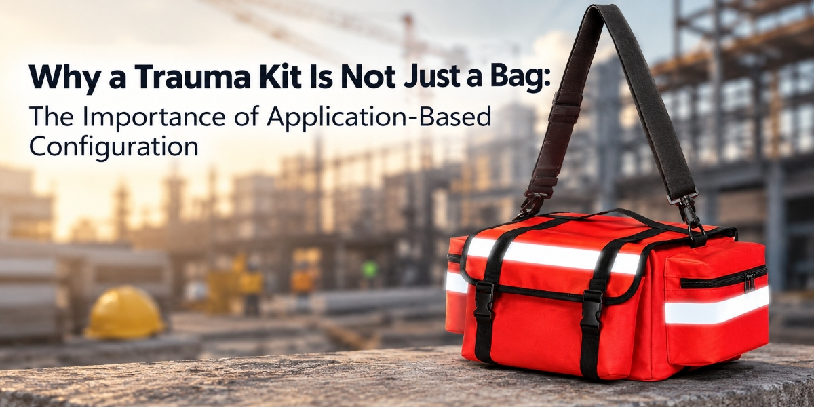

Why a Trauma Kit Is Not Just a Bag: The Importance of Application-Based Configuration
AUG 17, 2026

How Professional Buyers Can Build Emergency Response Solutions Around Real-World Risks
When buyers contact us about trauma kits, the first request is often straightforward:
“Please send your catalogue and price.”
This is completely understandable.
For distributors, outdoor brands, and safety product companies, pricing is always an important part of the evaluation process.
However, during product discussions, we often find that the real challenge is not the quotation itself.
The bigger question is:
Is this trauma kit designed for the application your customers actually need?
Because a trauma kit is not simply a pouch filled with medical supplies.
The configuration inside represents a decision about:
- who will use it,
- where it will be used,
- what risks need to be considered,
- and how quickly professional medical support may arrive.
This is why application-based configuration matters.
The Same Trauma Kit Category Can Represent Different Solutions
In the safety industry, terms such as:
- IFAK
- Trauma Kit
- Emergency Response Kit
- First Aid Kit
are widely used.
However, the same product category does not always mean the same product capability.
For example, two products may both be described as an “IFAK”.
One may focus mainly on:
- basic wound care,
- minor injury treatment,
- general first aid preparedness.
Another may be designed as a trauma response solution focusing on situations such as:
- severe bleeding control,
- emergency stabilization,
- delayed access to professional medical support.
Both products may have value.
The key question is not:
“Which kit contains more items?”
The key question is:
Which kit is suitable for the risk scenario your customer is preparing for?
Configuration Should Start With Risk, Not Available Components
A common mistake in product sourcing is starting with available products:
“What kits does the supplier already make?”
For professional buyers, a better approach is:
“What risks does my customer need to prepare for?”
This difference changes the entire product selection process.
For example, a trauma kit designed around outdoor activities may need to consider:
- remote locations,
- unpredictable environments,
- portability requirements,
- situations where rescue may take time.
A workplace safety solution may need to consider:
- occupational injury risks,
- emergency response procedures,
- industrial environments.
The product configuration should follow the application.
Not the other way around.
Why Trauma Components Represent Different Emergency Capabilities
One of the reasons trauma kit evaluation can become confusing is that buyers sometimes compare products by appearance.
However, the value of a trauma kit is often determined by what each component enables the user to do during an emergency.
For example:
A tourniquet is not simply another item inside a pouch.
Its purpose is to support massive bleeding control in situations where rapid action may be critical.
An emergency bandage is not just a dressing.
It supports bleeding management when direct pressure and wound treatment are required.
Compressed gauze is not included to increase item numbers.
It provides additional capability for wound management in trauma situations.
Understanding these functions helps buyers evaluate whether a configuration matches the intended application.
The Risk of Choosing a Kit That Is Too Basic
For distributors and brands, selecting the wrong configuration can create problems beyond the initial purchase.
A kit that is too basic for professional users may lead to:
- difficulty explaining product value,
- customer disappointment,
- limited market positioning.
For example, a customer purchasing an outdoor safety product may expect more than a simple first aid pouch.
They may be looking for a compact trauma preparedness solution suitable for real outdoor risks.
The challenge for buyers is finding the right balance between:
- capability,
- usability,
- market expectations.
The Risk of Choosing a Kit That Is Too Complex
More components do not always mean a better product.
An over-configured trauma kit may create other challenges:
- higher purchasing cost,
- increased inventory pressure,
- difficulty educating end users,
- reduced market suitability.
For many distributors, the best product is not the largest kit.
It is the kit that clearly matches the customer group and application.
Application-Based Configuration Helps Build Stronger Product Lines
For B2B buyers, a trauma kit is not only a single purchase.
It is often part of a larger product strategy.
Outdoor brands may need products that fit their customer journey.
PPE distributors may need emergency products that complement their existing safety portfolio.
Industrial safety suppliers may need reliable emergency response solutions for professional users.
A supplier who understands application-based configuration can help partners answer:
- Who is this product designed for?
- What problem does it solve?
- How should it be positioned in the market?
This reduces uncertainty before products reach the customer.
How GoSafeMed Approaches Trauma Kit Development
At GoSafeMed, we believe trauma kit development should begin with understanding the application behind the product.
Our approach is not simply assembling available components into a pouch.
We focus on understanding:
- the target market,
- the user environment,
- the expected risks,
- and the purpose of each configuration.
From compact outdoor IFAKs to professional emergency response solutions, we work with distributors and brands looking for trauma kit suppliers who understand both product function and market requirements.
Because the value of a trauma kit is not only inside the bag.
It is in the reason behind every component selected.
Final Thoughts
A trauma kit is not just a bag.
It is a safety solution designed around a specific environment, user group, and risk scenario.
For professional buyers, better sourcing decisions start with a different question:
Not:
“How many items are included?”
But:
“What emergency situation is this product designed to address?”
Application-based configuration helps distributors, outdoor brands, and safety companies select products that are easier to position, easier to explain, and more valuable to their customers.